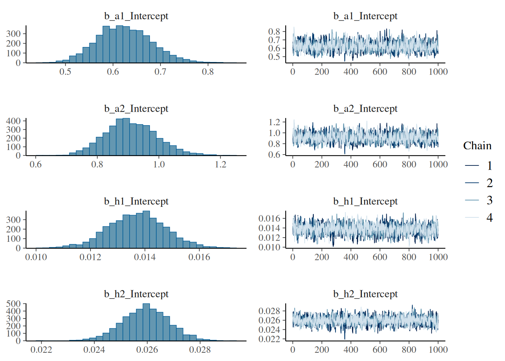
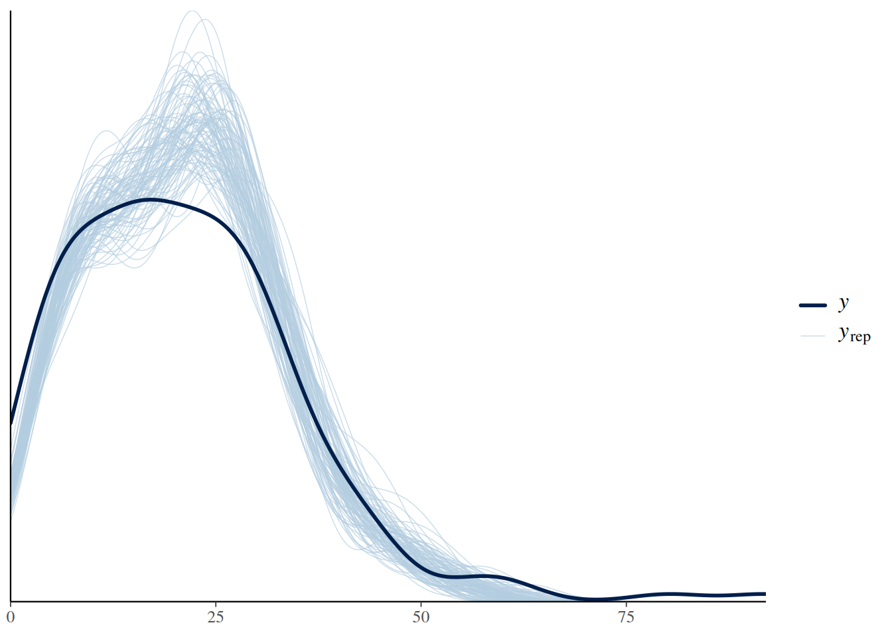
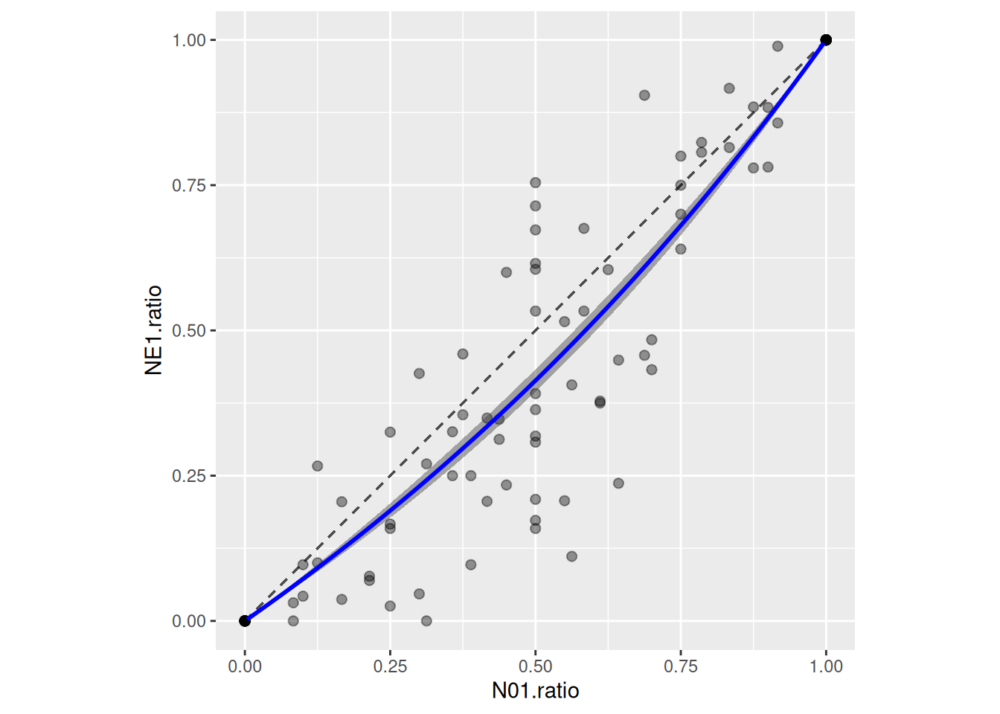

For feeding experiments with multiple prey species (\(i=1,\dots,m\)), feeding rates \(F_i\) on a focal species \(i\) are expected to decline in the presence of alternative prey \(k\), see e.g. Rosenbaum et al. (2024). We here use the multi-prey extension of the Holling type 2 functional response
\[F_i(N_1, \dots, N_m)=\frac{a_iN_i}{1+\sum_{k=1}^ma_kh_kN_k}\] The BayesFR package is limited to 2-prey systems. Assuming eaten prey are not replaced during the feeding trial with initial prey densities \(\left( \begin{smallmatrix} N_{1}(0)\\ N_{2}(0)\end{smallmatrix} \right)\), both prey densities \(\left( \begin{smallmatrix} N_{1}(t)\\ N_{2}(t)\end{smallmatrix} \right)\) decline dynamically and interdependently in \(t\in[0,T]\). We use the coupled ODE system
with fixed predator density \(P\), which is numerically integrated to compute prey densities at the end of the experiment \(\left( \begin{smallmatrix} N_{1}(T)\\ N_{2}(T)\end{smallmatrix} \right)\). Predictions of eaten prey are then given by \(\left( \begin{smallmatrix} N_{1}(0)-N_{1}(T)\\ N_{2}(0)-N_2(T)\end{smallmatrix} \right)\), which are fitted to observed numbers of eaten prey \(\left( \begin{smallmatrix}N_{E1}\\ N_{E2}\end{smallmatrix} \right)\).
Dataset
We use a dataset from Colton (1897), downloaded from Novak & Stouffer (2020). Each row contains data from a single feeding trial, with numbers of offered \(N_{01},N_{02}\) and of eaten prey \(N_{E1},N_{E2}\) for both prey species.
library(BayesFR)library(brms)library(ggplot2)library(cowplot) # ggplot gridsdf.all = df_Colton_1987_1_ECOLOGYdf.all$Time = df.all$Time/24# convert units from hours to dayshead(df.all)
The experimental design (combinations of offered prey) is a full factorial grid, including single-prey experiments (\(N_{01}=0\) or \(N_{02}=0\)) and multi-prey experiments (\(N_{01},N_{02}>0\)).
We can visualize multi-prey data by plotting the proportion of eaten prey \(\frac{N_{E1}}{N_{E1}+N_{E2}}\) (y-axis) against the proportion of offered prey \(\frac{N_{01}}{N_{01}+N_{02}}\) (x-axis) of prey species 1. Points below 1-1-line indicate prey species 1 is consumed relatively less often than available in environment. In contrast to the single-prey data, the predator seems to have a preference for prey 2.
We will fit the Holling type 2 multi-species FR to the whole dataset (single- and multi-prey data) to investigate this phenomenon.
Model fitting
First, the data needs to be converted from “wide” to “long” format with the function convert_2sp_to_long. Each row is split up in two rows with relevant columns
ID focal prey ID (1 or 2)
NE number of eaten prey of focal prey
N0 number of offered prey of focal prey
N0.alt number of offered prey of alternative prey
This has purely technical reasons, since brms requires univariate model predictions. Predictions are still generated with the coupled ODE system, but with the “long” data format, predictions for each experiment are generated twice, once with output for NE1 and once for NE2. Also, rows with N0=0 are removed.
To fit the Holling type 2 MSFR, the function MS_Type2H_dyn is used for prediction, which takes data arguments N0,N0.alt,ID,P0,Time and parameters a1,a2,h1,h2. Choosing a Binomial distribution (and specifying the identity link) with N0 trials, the prediction model is divided by N0 to compute probability of being eaten, just as in the single-prey models.
Family: binomial
Links: mu = identity
Formula: NE | trials(N0) ~ MS_Type2H_dyn(N0, N0.alt, ID, P0, Time, a1, a2, h1, h2)/N0
a1 ~ 1
a2 ~ 1
h1 ~ 1
h2 ~ 1
Data: df (Number of observations: 180)
Draws: 4 chains, each with iter = 2000; warmup = 1000; thin = 1;
total post-warmup draws = 4000
Regression Coefficients:
Estimate Est.Error l-95% CI u-95% CI Rhat Bulk_ESS Tail_ESS
a1_Intercept 0.62 0.06 0.52 0.74 1.00 1277 1547
a2_Intercept 0.91 0.08 0.76 1.08 1.00 1368 1692
h1_Intercept 0.01 0.00 0.01 0.02 1.00 1551 1666
h2_Intercept 0.03 0.00 0.02 0.03 1.00 1621 1987
Draws were sampled using sampling(NUTS). For each parameter, Bulk_ESS
and Tail_ESS are effective sample size measures, and Rhat is the potential
scale reduction factor on split chains (at convergence, Rhat = 1).
plot(fit.1)

plot(pp_check(fit.1, ndraws=100))

Model investigation
Coming back to our research question (stronger feeding of prey 1 in single-prey experiments, but preference for prey 2 in multi-prey experiments), we check attack rates and handling times. Interestingly, \(a_1<a_2\), which we verify by testing the posterior distribution of the difference:
hypothesis(fit.1, "a1_Intercept < a2_Intercept")
Hypothesis Tests for class b:
Hypothesis Estimate Est.Error CI.Lower CI.Upper Evid.Ratio
1 (a1_Intercept)-(a... < 0 -0.29 0.04 -0.36 -0.22 Inf
Post.Prob Star
1 1 *
---
'CI': 90%-CI for one-sided and 95%-CI for two-sided hypotheses.
'*': For one-sided hypotheses, the posterior probability exceeds 95%;
for two-sided hypotheses, the value tested against lies outside the 95%-CI.
Posterior probabilities of point hypotheses assume equal prior probabilities.
So how can single-prey feeding on prey 1 be stronger than on prey 2? This is purely driven by handling times \(h_1<h_2\), or equivalently \(\frac{1}{h_1}>\frac{1}{h_2}\), so maximum feeding rate \(f_\max=\frac{1}{h}\) is higher for prey 1. The hypothesis function can also be used to compute difference in maximum feeding rates, which is 34.6 (95% CI [25.7,44.9]).
hypothesis(fit.1, "h1_Intercept < h2_Intercept")
Hypothesis Tests for class b:
Hypothesis Estimate Est.Error CI.Lower CI.Upper Evid.Ratio
1 (h1_Intercept)-(h... < 0 -0.01 0 -0.01 -0.01 Inf
Post.Prob Star
1 1 *
---
'CI': 90%-CI for one-sided and 95%-CI for two-sided hypotheses.
'*': For one-sided hypotheses, the posterior probability exceeds 95%;
for two-sided hypotheses, the value tested against lies outside the 95%-CI.
Posterior probabilities of point hypotheses assume equal prior probabilities.
Hypothesis Tests for class b:
Hypothesis Estimate Est.Error CI.Lower CI.Upper Evid.Ratio
1 ((1/h1_Intercept)... > 0 34.8 5.88 25.82 44.66 Inf
Post.Prob Star
1 1 *
---
'CI': 90%-CI for one-sided and 95%-CI for two-sided hypotheses.
'*': For one-sided hypotheses, the posterior probability exceeds 95%;
for two-sided hypotheses, the value tested against lies outside the 95%-CI.
Posterior probabilities of point hypotheses assume equal prior probabilities.
Plotting single-prey data against model predictions again shows how the difference in eaten prey is driven by higher maximum feeding rate on prey 1.
Plotting the whole dataset (single- and multi-prey feeding) shows, however, that feeding rate on prey 1 sharply declines in the presence of prey two (green and red curves in left figure), while feeding rate on prey 2 just weakly declines in the presence of prey 1 (right figure). This is driven by \(a_2>a_1\).
Realized preference (ratio of eaten prey vs ratio of offered prey) can be predicted as well. Posterior predictions for NE1 and NE2 are generated using posterior_epred, along a gradient of offered prey ratio (while keeping total number of offered prey constant), to compute posterior ratios of eaten prey.
# choose level of total prey abundance (constant)N.total =250df.pred =data.frame(N01 =1:(N.total-1),N02 = (N.total-1):1)df.pred$ratio = df.pred$N01/(df.pred$N01+df.pred$N02)# set up dataframes for posterior predictionsdf.pred.1=data.frame(N0 = df.pred$N01, N0.alt = df.pred$N02, ID =1, P0 =1, Time =1)df.pred.2=data.frame(N0 = df.pred$N02, N0.alt = df.pred$N01, ID =2, P0 =1, Time =1)# posterior predictions for prey1, prey2, and ratiopost.1=posterior_epred(fit.1, newdata=df.pred.1)post.2=posterior_epred(fit.1, newdata=df.pred.2)post.ratio = post.1/(post.1+post.2)# posterior ratio means and credible intervalsdf.pred$mean =colMeans(post.ratio)df.pred$upper =apply(post.ratio, 2, quantile, probs =0.975)df.pred$lower =apply(post.ratio, 2, quantile, probs =0.025)ggplot(df.all, aes(x=N01.ratio, y=NE1.ratio)) +geom_segment(x=0, y=0, xend=1, yend=1, color="grey30", linetype="dashed") +geom_point(alpha=0.4, size=2) +geom_ribbon(df.pred, mapping=aes(x=ratio, ymin=lower, ymax=upper), alpha =0.4, inherit.aes=FALSE) +geom_line(df.pred, mapping=aes(x=ratio, y=mean), color ="blue", linewidth =1, inherit.aes=FALSE) +theme(aspect.ratio =1)

Here, a preference for prey 2 shows.
Alternative MSFR models
We fit alternative models to test for sigmoidal (type 3) behavior and / or switching of prey preferences, using model comparison. See Rosenbaum et al. (2024) for an in-depth description of the 4 MSFR models.
The Holling type 2 MSFR above shows type 2 behavior in single-prey and also in multi-prey scenarios. The preference in the 2-prey scenario is purely determined by the ratio of attack rates \(\phi_{12}=\frac{a_1}{a_2}\). Also, preference is density-independent and cannot switch, as seen in the last figure.
Alternatively, the Holling type 3 MSFR\[F_i(N_1, \dots, N_m)=\frac{b_iN_i^{1+q}}{1+\sum_{k=1}^mb_kh_kN_k^{1+q}}\] shows sigmoidal behavior in single-prey and also in multi-prey scenarios for \(q>0\). Preference \(\phi_{12}=\frac{b_1N_1^q}{b_2N_2^q}\) is now density-dependent and can switch. Switching is described as passive, since all parameters could theoretically be estimated from single-prey data alone.
Family: binomial
Links: mu = identity
Formula: NE | trials(N0) ~ MS_Type3H_dyn(N0, N0.alt, ID, P0, Time, b1, b2, h1, h2, q)/N0
b1 ~ 1
b2 ~ 1
h1 ~ 1
h2 ~ 1
q ~ 1
Data: df (Number of observations: 180)
Draws: 4 chains, each with iter = 2000; warmup = 1000; thin = 1;
total post-warmup draws = 4000
Regression Coefficients:
Estimate Est.Error l-95% CI u-95% CI Rhat Bulk_ESS Tail_ESS
b1_Intercept 0.53 0.07 0.39 0.69 1.00 1197 1588
b2_Intercept 0.78 0.11 0.59 1.00 1.00 1182 1360
h1_Intercept 0.01 0.00 0.01 0.02 1.00 2097 1893
h2_Intercept 0.03 0.00 0.02 0.03 1.00 2084 2055
q_Intercept 0.05 0.03 0.00 0.12 1.00 1073 1322
Draws were sampled using sampling(NUTS). For each parameter, Bulk_ESS
and Tail_ESS are effective sample size measures, and Rhat is the potential
scale reduction factor on split chains (at convergence, Rhat = 1).
Yodzis’ MSFR\[F_i(N_1, \dots, N_m)=\frac{w_ia_iN_i^{1+r}}{\sum_k^m w_kN_k^r +\sum_{k=1}^mw_ka_kh_kN_k^{1+r}}\] collapses to a type 2 FR in single-prey scenarios, but features sigmoidal behavior for \(r>0\) and can also produce switching. For 2-prey systems, we have a preference weight \(w_1\), \(w_2=1-w_1\) and preference \(\phi_{12}=\frac{w_1a_1N_1^r}{w_2a_2N_2^r}\) is density-dependent. Here, potential switching is active and requires 2-prey data to estimate all parameters.
Family: binomial
Links: mu = identity
Formula: NE | trials(N0) ~ MS_TypeY_dyn(N0, N0.alt, ID, P0, Time, a1, a2, h1, h2, w1, r)/N0
a1 ~ 1
a2 ~ 1
h1 ~ 1
h2 ~ 1
w1 ~ 1
r ~ 1
Data: df (Number of observations: 180)
Draws: 4 chains, each with iter = 2000; warmup = 1000; thin = 1;
total post-warmup draws = 4000
Regression Coefficients:
Estimate Est.Error l-95% CI u-95% CI Rhat Bulk_ESS Tail_ESS
a1_Intercept 0.99 0.13 0.76 1.29 1.00 1445 1541
a2_Intercept 1.23 0.16 0.96 1.59 1.00 1675 2110
h1_Intercept 0.02 0.00 0.01 0.02 1.00 1728 1858
h2_Intercept 0.02 0.00 0.02 0.03 1.00 1922 2375
w1_Intercept 0.46 0.05 0.37 0.55 1.00 1267 1768
r_Intercept 0.11 0.05 0.02 0.20 1.00 1581 995
Draws were sampled using sampling(NUTS). For each parameter, Bulk_ESS
and Tail_ESS are effective sample size measures, and Rhat is the potential
scale reduction factor on split chains (at convergence, Rhat = 1).
Finally, the generalized switching MSFR\[F_i(N_1, \dots, N_m)=\frac{w_ib_iN_i^{1+q+r}}{\sum_k^m w_kN_k^r +\sum_{k=1}^mw_kb_kh_kN_k^{1+q+r}}\] generalizes all previous models. It features sigmoidal behavior in single-prey scenarios for \(q>0\), which can be stronger in multi-prey scenarios for \(r>0\). Preference \(\phi_{12}=\frac{w_1b_1N_1^{q+r}}{w_2b_2N_2^{q+r}}\) is density-dependent and potential switching is active, too.
Family: binomial
Links: mu = identity
Formula: NE | trials(N0) ~ MS_TypeZ_dyn(N0, N0.alt, ID, P0, Time, b1, b2, h1, h2, w1, q, r)/N0
b1 ~ 1
b2 ~ 1
h1 ~ 1
h2 ~ 1
w1 ~ 1
q ~ 1
r ~ 1
Data: df (Number of observations: 180)
Draws: 4 chains, each with iter = 2000; warmup = 1000; thin = 1;
total post-warmup draws = 4000
Regression Coefficients:
Estimate Est.Error l-95% CI u-95% CI Rhat Bulk_ESS Tail_ESS
b1_Intercept 0.80 0.16 0.53 1.13 1.01 1227 1326
b2_Intercept 1.00 0.19 0.67 1.40 1.00 1133 888
h1_Intercept 0.02 0.00 0.01 0.02 1.00 1687 1686
h2_Intercept 0.02 0.00 0.02 0.03 1.00 2086 2119
w1_Intercept 0.46 0.04 0.37 0.54 1.00 1764 1889
q_Intercept 0.07 0.05 0.00 0.17 1.01 876 746
r_Intercept 0.06 0.04 0.00 0.16 1.00 1268 1347
Draws were sampled using sampling(NUTS). For each parameter, Bulk_ESS
and Tail_ESS are effective sample size measures, and Rhat is the potential
scale reduction factor on split chains (at convergence, Rhat = 1).
Model comparison supports the most simple model, the Holling type 2 MSFR. Hence, the predator-prey interaction does not include any type 3 behavior, nor does it include prey preference switching.